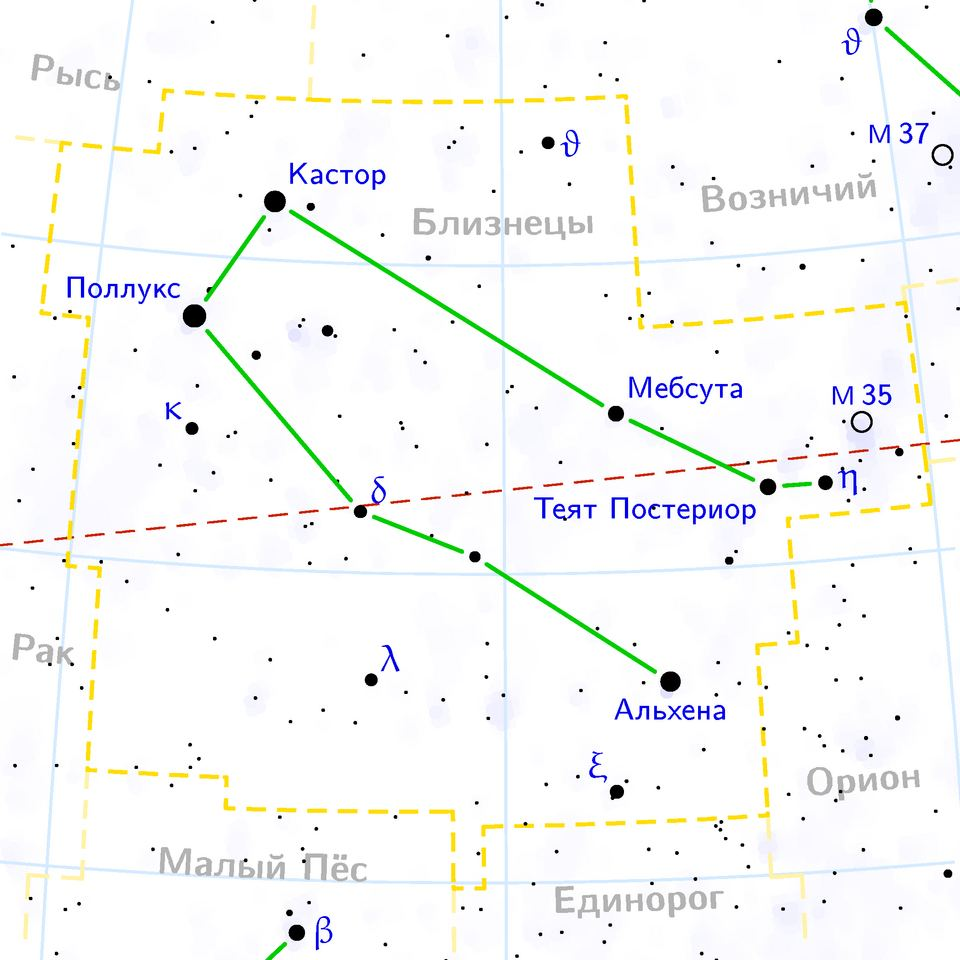

İkizler burcu özellikleri: tarihleri, elementi ve uyumu

Görsel: Gemini constellation map ru lite · Wikimedia Commons katkıcısı · CC BY-SA 3.0 · Wikimedia Commons
İkizler, tropik zodyağın üçüncü burcu sayılır ve ilkbaharın sonuna denk gelen dönemi kapsar. Bu sayfada burcun tarihleri, gökyüzündeki takımyıldızı ve astrolojide bu burca atfedilen özellikler bir araya getirildi.
İkizler burcu hangi tarihler arası?
Geleneksel tropik zodyakta İkizler burcu 21 Mayıs ile 20 Haziran arasını kapsar. Geçiş anı yıldan yıla birkaç saat kaydığı için 20-21 Mayıs ve 20-21 Haziran doğumlularda doğum saati belirleyici olur.
İkizler hava grubundadır ve değişken nitelik taşır. Yönetici gezegeni Merkür, sembolü ise yan yana duran iki figürdür. Astrolojide değişken burçlar, bir mevsimin sonuna denk gelen ve uyum sağlamayla ilişkilendirilen burçlardır.
Hava grubunun diğer üyeleri Terazi ve Kova'dır. Merkür'ün İkizler'i yönettiği fikri antik gelenekten gelir; gezegen Roma mitolojisinde haberci tanrının adını taşır ve burca atfedilen iletişim ilgisiyle eşleştirilmiştir.
İkizler takımyıldızı gökyüzünde nerede?
İkizler takımyıldızı, Latince adıyla Gemini, batıda Boğa ile doğuda Yengeç arasında yer alır; kuzeyinde Arabacı ve Vaşak bulunur. 514 derecekarelik alanıyla 88 takımyıldız arasında 30. sıradadır ve kış akşamlarında kuzey gökyüzünde rahatça seçilir.
En parlak yıldızı 1,14 kadir parlaklıktaki Pollux'tur; 34 ışık yılı uzaklıkta turuncu bir devdir. Castor ise çıplak gözle tek yıldız gibi görünse de, 52 ışık yılı uzaklıkta altı bileşenli bir yıldız sistemidir.
Mitolojide Castor ve Pollux, Leda'nın oğulları olan Dioskurlar'dır ve denizcilerin koruyucusu sayılırlardı. William Herschel, Uranüs'ü 13 Mart 1781'de bu takımyıldızın eta yıldızı yakınında keşfetti. Aralık ortasındaki Geminid meteor yağmuru da buradan yayılır.
İkizler burcuna atfedilen özellikler neler?
Astrolojide İkizler burcuna merak, sözel akıcılık, hızlı öğrenme ve çok yönlülük atfedilir. Geleneksel yorumda bu burcun aynı anda birkaç konuyla ilgilendiği ve bilgiyi paylaşmaktan hoşlandığı söylenir.
Zorlanılan yanlar olarak dağınık ilgi, kararsızlık ve yüzeysel kalma eğilimi sayılır. Bunlar ölçülmüş özellikler değil, astroloji literatüründe tekrarlanan yorumlardır.
İş hayatında bu burca iletişim, yazı, satış ve öğretme gibi alanlara yatkınlık atfedilir. İlişkilerde ise sohbetin önemi, tekdüzelikten sıkılma ve arkadaşça yaklaşım öne çıkarılır.
Bu aralıkta doğan tanınmış isimler arasında Orhan Pamuk (7 Haziran 1952), Bob Dylan (24 Mayıs 1941) ve Marilyn Monroe (1 Haziran 1926) sayılabilir. Ortak bir kişilik profilleri olduğu iddiası doğrulanabilir değildir.
İkizler burcu hangi burçlarla uyumlu sayılır?
Geleneksel uyum yorumunda İkizler'in aynı elementten Terazi ve Kova ile kolay anlaştığı söylenir. Ateş grubundan Koç ve Aslan da tempo benzerliği nedeniyle uyumlu kabul edilir; gerekçe olarak hareketlilik ve merak ortaklığı gösterilir.
Zorlu kabul edilen eşleşmeler genelde Başak ve Balık'tır; üçü de değişken nitelik taşıdığı için yorumlarda yön belirleme güçlüğü vurgulanır. Bu tablolar astrolojinin kendi kurallarına dayanır.
Astroloji kişiliği ölçmez ve bilimsel bir sınıflandırma değildir; buradaki özellikler kültürel bir geleneğin yorumlarıdır, merak ve eğlence için okunur.
Takip etmek için
- Yükselen burcunu hesapla
- Burç uyumu tablosuna bak
- Hava grubu burçlarını karşılaştır
Sık sorulan sorular
İkizler burcu hangi gün biter?
Geleneksel tarih aralığı 20 Haziran'da sona erer ve Yengeç başlar. Geçiş yaz gündönümüne bağlı olduğu için bazı yıllarda 21 Haziran'a kayar; sınır doğumlularda doğum saatine bakılır.
Castor gerçekten tek bir yıldız mı?
Hayır. Çıplak gözle tek ve mavimsi beyaz görünür, ancak teleskopla ve tayf ölçümleriyle altı bileşenden oluşan bir yıldız sistemi olduğu anlaşılmıştır. Dünya'ya uzaklığı yaklaşık 52 ışık yılıdır.
İkizler ile Başak'ın yöneticisi neden aynı?
Antik astroloji sisteminde Merkür iki burca birden yönetici atanmıştır. İkizler'de sözlü iletişimle, Başak'ta ise çözümleme ve ayrıntıyla ilişkilendirilir. Bu ayrım geleneğin kendi yorumudur.
Olgular şu yayıncıların haberlerinden derlendi: Wikipedia – Gemini (constellation), IAU takımyıldız alan ve sınır listesi, Wikipedia – Orhan Pamuk (doğum tarihi teyidi). Metnin tamamı TrendSaphiens tarafından yazıldı; kaynaklarla kelime örtüşmesi %0.0 (eşik %5). Kaynaklarda olmayan bilgi eklenmedi.